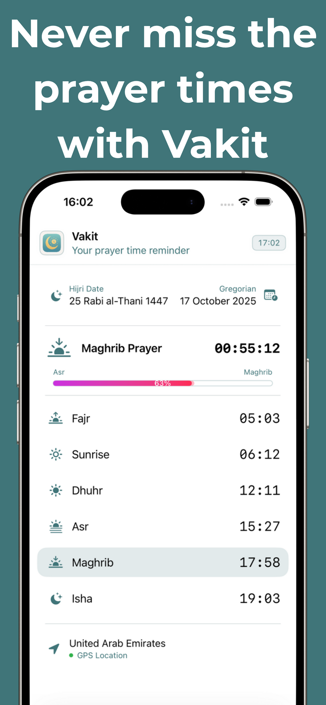

Prayer Times
Easy to Use
Learn prayer times easily with the Vakit app. Find the qibla direction. Get notifications. Simple and easy to use. Prayer times, qibla direction, Hijri calendar and offline functionality features.
üì± Easy to Use
üìç Location Detection
üïå Qibla Direction
üìÖ Hijri Calendar
üì∂ Works Offline
